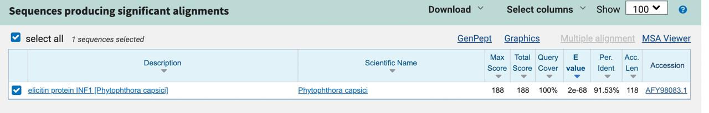

Introduction
The interaction between ELR (Elicitin Response Receptor) and INF1
from Phytophthora infestans plays a critical role in plant
immune recognition, particularly in Solanum microdontum. The
ELR receptor recognizes the INF1 elicitor protein produced by
Phytophthora, triggering an immune response. This study
explores a synthetic biology approach using a fusion protein system
in Bacillus subtilis to detect and respond to the INF1
elicitor, potentially mitigating fungal infections in agricultural
settings.
Proposed Synthetic Biology Approach
Our design integrates a fusion protein system combining ELR domain,
PhoR, and a responsive antifungal expression module.

Fusion Protein Design
Components:
-
Signal Peptide - Located at the N-terminal to ensure
proper secretion. Derived from PhoD for effective membrane
localization[5].
-
ELR Receptor - Recognizes the INF1 elicitor from
P. capsici. Serves as the extracellular domain for signal
transduction.
-
Linker Sequence - Provides flexibility between the receptor
and PhoR to maintain structural integrity and function.
-
PhoR Sensor Kinase - Detects the ELR-INF1 interaction and
autophosphorylates. Replaces PhoD while ensuring regulatory
function
[2][3].
Synthetic Circuit Implementation
Bacillus subtilis is chosen as the bacterial chassis due to
its natural phosphate-sensing pathway and antifungal properties.
The engineered system follows the sequence:
Signal Peptide - ELR Receptor - Linker - PhoR
Upon INF1 binding, PhoR activates PhoP, triggering
downstream antifungal gene expression.
Antifungal Response
PhoP regulates fengycin biosynthesis, a lipopeptide with
antifungal activity.
The engineered B. subtilis enhances fengycin production under
phosphate-limiting conditions, promoting plant protection
[4].
The final sequence involves: PhoP - Fengycin - Stop Codon
Conclusion
This synthetic biology solution leverages the ELR-INF1 immune
recognition mechanism to activate a phosphate-responsive
two-component system in Bacillus subtilis. By integrating
phosphate signaling with antifungal biosynthesis, the engineered
bacteria provide a novel biocontrol method against
Phytophthora infections in crops.
References
[1]Z. Chen et al., “Convergent evolution of immune receptors
underpins distinct elicitin recognition in closely related
Solanaceous plants,” The Plant Cell, vol. 35, no. 4, pp. 1186-1201,
Jan. 2023, doi:
https://doi.org/10.1093/plcell/koad002.
[2]R. Gao and A. M. Stock, "Biological Insights from Structures of
Two-Component Proteins," Annu. Rev. Microbiol., vol. 63, pp.
133-154, 2009, doi:
https://doi.org/10.1146/annurev.micro.091208.073344.
[3]R. B. Bourret and J. S. Parkinson, "Evolution of Bacterial
Chemotaxis and Two-Component Signal Transduction Systems," Annu.
Rev. Microbiol., vol. 63, pp. 563-585, 2009, doi:
https://doi.org/10.1146/annurev.micro.091208.073254.
[4]Q. GUO et al., “The PhoR/PhoP two-component system regulates
fengycin production in Bacillus subtilis NCD-2 under
low-phosphate conditions,” Journal of Integrative Agriculture, vol.
17, no. 1, pp. 149-157, Feb. 2018, doi:
https://doi.org/10.1016/S2095-3119(17)61669-1.
[5]J. L. Beckwith and D. A. R. Matthews, "Protein Secretion and the
Signal Peptide," in Bacterial Secretion Systems: Methods and
Protocols, 2nd ed., B. R. Lamb et al., Ed. New York: Springer, 2020,
pp. 1-23.